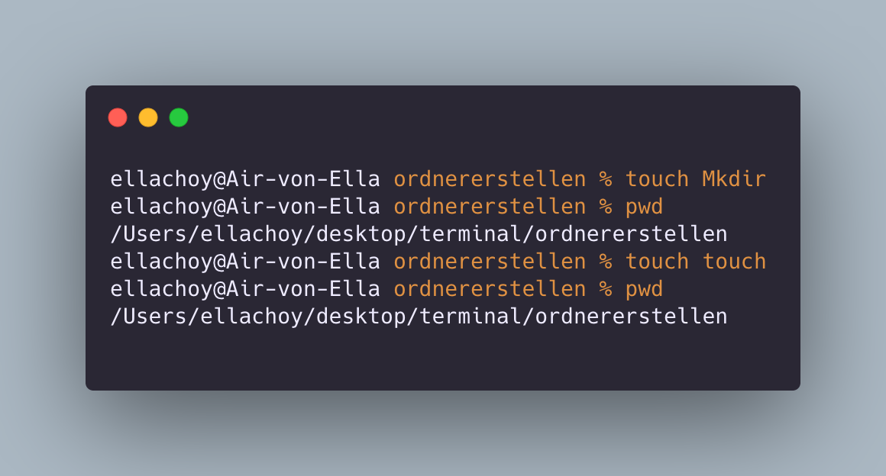
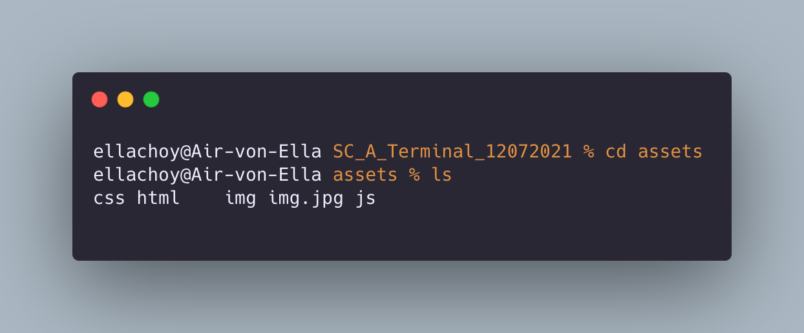
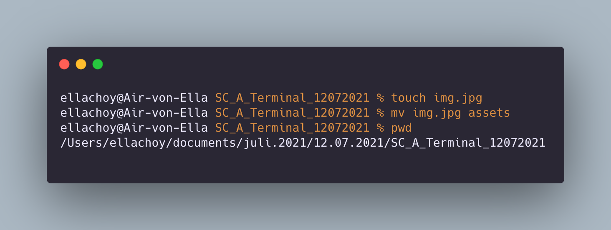
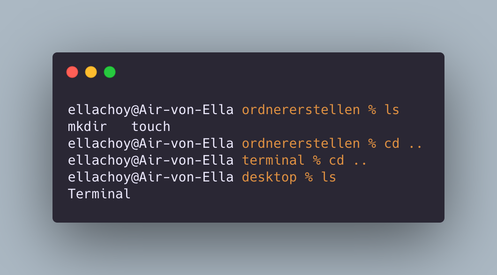
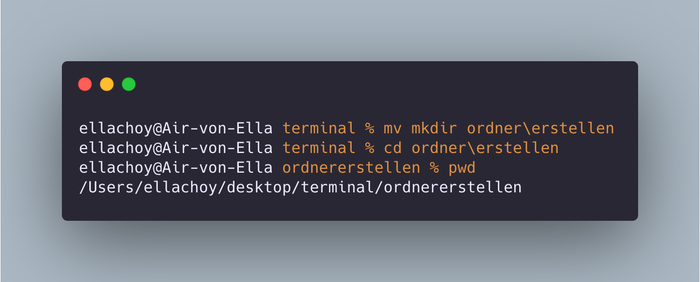

Ordner erstellen: Mkdir
: erstellt einen Ordner
Point! : befehl/ was ?
beispiel: mkdir ordnername

: erstellt einen Ordner
Point! : befehl/ was ?
beispiel: mkdir ordnername
: erstellt eine datei
Point! : befehl/ was ?
beispiel: touch dateiname
: Übersicht von mein Verzeichniss
Point! : befehl
beispiel: ls
: wo befindet sich meine erstellte Ordner/datei?
Point! : befehl
beispiel: pwd
: wo befindet sich meine erstellte Ordner/datei?
Point! : befehl (leerzeichnen)..
beispiel: cd ..
: Ordner/Datei verschieben
Point! : was/ wohin?
beispiel: Mv ordner/dateiname location
